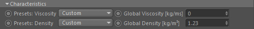
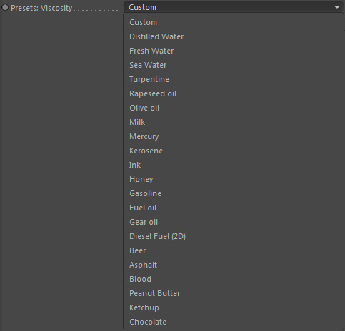
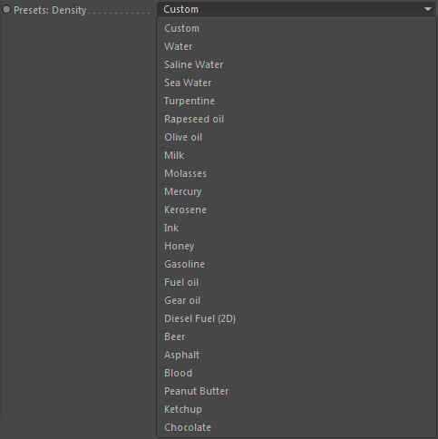

Characteristica

Presets: Viscosity

A list of preset viscosity constants of different fluids.
Global Viscosity [kg/ms]
The global fluid viscosity given in kg/ms.
Presets: Density

A list of preset density constants of different fluids.
Global Density [kg/m³]
The global fluid density given in kg/m³.
The default value 1.23 is the approximate density of air (which we actually simulate when doing a smoke or fire simulation).